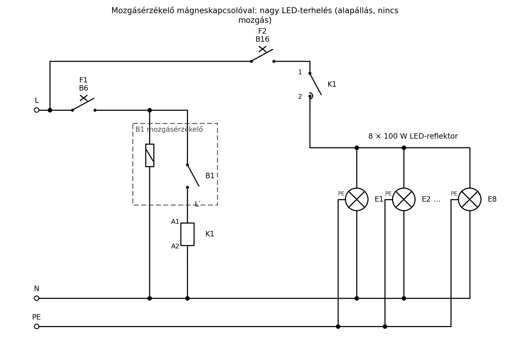
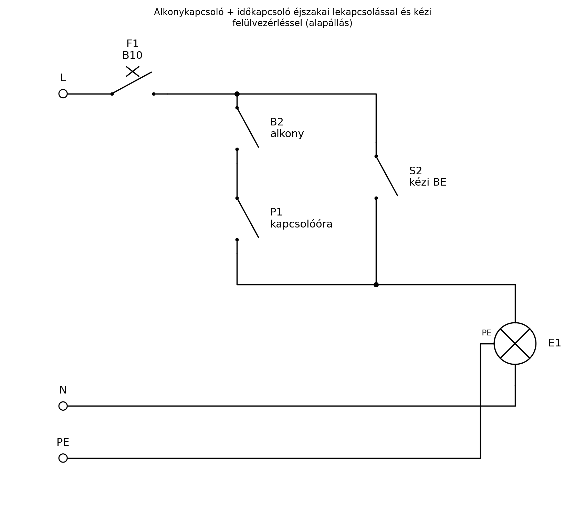

![Négy érzékelőkimenet bekötése - Szemléltető mini-rajzok, alapállapotban. (a) potenciálmentes érintkező: a termosztát csak kapcsol, a tekercs feszültségét a T1 adja; (b) háromvezetékes PNP érzékelő: barna +, kék −, fekete a kimenet, amely működéskor +24 V-ot ad a PLC-bemenetre; (c) kétvezetékes 4–20 mA távadó: a táp és a jel ugyanazon az érpáron, sorosan a PLC analóg bemenetével; (d) 230 V-os relés kimenet: az L′ közvetlenül a K1 tekercsét (A1) táplálja. A kapocsjelek gyártófüggők (ellenőrizendő: adatlap).](assets/ve070-diagram-1.png)
Egy családi ház udvari világítását úgy szeretnéd beállítani, hogy alkonyatkor magától kapcsoljon be, de csak akkor, ha valaki a kocsibeállón mozog. Napközben egyáltalán ne égjen a lámpa, mert a tulajdonos szerint pazarlás lenne. Ha a mozgás megszűnt, a lámpa még maradjon bekapcsolva két percig, hogy a lakó beérjen az ajtóig.
Ehhez két érzékelőt kell összehangolnod: egy fényérzékelőt, amely a sötétedést érzékeli, és egy mozgásérzékelőt, amely a területen belüli embert vagy járművet. Ugyanez a gondolatmenet vezet a társasházi lépcsőházak, a kávézók mosdói, az irodai tárgyalók vagy a hűtőházak automatizálásáig is. Az érzékelő az épület „szeme és füle”, a beavatkozók – például mágneskapcsolók, relék, LED-meghajtók – pedig a „keze”. Ebben az alfejezetben az érzékelők oldalát tanulod meg: hogyan működnek, hogyan választasz közülük, hová telepítsd, és hogyan állítsd be őket, hogy ne legyen téves bekapcsolás vagy bosszantó kimaradás.
Egy épületautomatikai rendszerben az érzékelő nem önmagában dolgozik: jelet ad egy vezérlőnek vagy közvetlenül egy beavatkozónak. Például egy szabadon álló mozgásérzékelős reflektorban a szenzor, a vezérlőelektronika és a kapcsolórelé egyetlen házban van. Egy KNX-rendszerben viszont az érzékelő a buszra küld táviratot, és a döntést egy másik eszköz hozza meg.
A gyakorlatban ezért az érzékelő kiválasztásakor mindig a teljes láncot kell nézned: milyen terhet kapcsol, milyen feszültséggel működik, milyen a kimenete, és hogyan viselkedik áramkimaradás után.
Szerelőként az érzékelőből először a kimenetét kell megismerned, mert ez dönti el, mire köthető, hány ér kell hozzá, és mit ronthatsz el. A hat gyakori kimenettípus:
| Kimenet | Tipikus érzékelő | Mire köthető | Vezetékszám | Buktató |
|---|---|---|---|---|
| 230 V-os relés kimenet (L′) | mozgásérzékelő, szürkületkapcsoló | lámpa, mágneskapcsoló tekercse | 3 (L, N, L′) | a megengedett terhelés, a LED-meghajtók bekapcsolási áramlökése |
| kétvezetékes elektronikus | N nélküli mozgásérzékelő, dimmer | csak a gyártó szerinti terhelés | 2 (L, L′) | minimális terhelés, LED-es lámpa derengése |
| potenciálmentes relé | termosztát, CO₂-szabályozó | bármely vezérlőkör | 2 + táp | különböző feszültségszintek keveredése egy érintkezőn |
| 24 V DC tranzisztoros (PNP/NPN) | ipari közelítéskapcsoló, jeladó | PLC-bemenet, 24 V-os relé | 3 (+, −, jel) | PNP és NPN felcserélése |
| analóg 0–10 V vagy 4–20 mA | CO₂-, hőmérséklet-távadó | szabályozó, PLC analóg bemenet | 2–4 | árnyékolás, polaritás |
| busz (KNX, DALI) | buszos nyomógomb, jelenlétérzékelő | buszvonal | 2 (buszér) | lásd KNX, DALI és más épületautomatikai rendszerek |
A négy leggyakoribb esetet az alábbi mini-rajzok mutatják. Nézd meg mindegyiknél, honnan jön a tápfeszültség, és mit kapcsol az érzékelő kimenete.
Ábraolvasás. (a) A termosztát érintkezője potenciálmentes: maga nem ad feszültséget, csak zár; a K1 tekercsének 24 V-ját a T1 adja, ezért a termosztát 230 V-os és törpefeszültségű körben is használható – de egyszerre csak az egyikben. (b) A háromvezetékes PNP érzékelő barna erét a +24 V-ra, kékjét a 0 V-ra kötjük; a fekete kimenet működéskor +24 V-ot ad („forrásként” táplálja) a PLC I0.0 bemenetét. NPN érzékelő a 0 V-ot kapcsolná – ilyen bemenetre PNP-t kötve a jel sosem jelenik meg. (c) A kétvezetékes 4–20 mA-es távadó ugyanazon az érpáron kapja a tápot és adja a jelet: a hurokban folyó áram (4 mA = a méréshatár alja, 20 mA = a teteje) halad át a PLC analóg bemenetén. A 0 mA tehát nem „nulla mért érték”, hanem szakadás. (d) A 230 V-os mozgásérzékelő L′ kimenete közvetlenül a K1 tekercsét (A1) táplálja; a K1 főérintkezője kapcsolhatja a nagyobb világítási terhelést. Az érzékelők beavatkozóit a Beavatkozók: mágneskapcsolók, szelepek, szervomotorok, a PLC-bemeneteket a PLC-alapok és ipari vezérlés alfejezet tárgyalja.
A fotoellenállás (LDR, Light Dependent Resistor) olyan félvezető rétegből készült alkatrész, amelynek ellenállása erős megvilágításban lecsökken, sötétben pedig megnő. Régebbi kivitelben kadmium-szulfid (CdS), újabb berendezésekben környezetbarát anyagok is lehetnek (ellenőrizendő: aktuális RoHS-korlátozások). Az LDR nem ad ki feszültséget, hanem az ellenállásváltozását használjuk fel egy feszültségosztóban vagy komparátor bemenetén.
Szabály. Egy tipikus szürkületkapcsoló jelkondicionálása: az érzékelőt egy ellenállással feszültségosztóba kötik, és az osztópont feszültségét hasonlítják egy beállított küszöbfeszültséghez. Ha nappalból estébe megyünk, az LDR ellenállása nő, az osztópont feszültsége pedig áthalad a küszöbön, és a készülék kapcsol.
A fotoellenállás előnye az olcsósága és az egyszerű elektronikája, hátránya a lassabb reakció, a nagy szórás és az, hogy a kapcsolási küszöb hőmérsékletfügghet. Pontos fényméréshez vagy gyors fényjel-átvitelhez ezért más érzékelőt válassz.
A fotodióda fény hatására záróirányú áramot ad; ez az áram közel arányos a megvilágítással, és gyorsan változik. A fénytranzisztor a fotodióda áramát tranzisztorral erősíti, ezért nagyobb jelszintet ad, de valamivel lassabb. A gyakorlati szerelő számára ezek nem alkatrészszinten, hanem kész érzékelők formájában jelennek meg: fénysorompó, fénymérő, világításszabályozó érzékelő, jeladó.
Továbbvitt eredmény. Az érzékelő mint jeladó és a beavatkozó kapcsolatát a Beavatkozók: mágneskapcsolók, szelepek, szervomotorok alfejezetben használjuk fel: ott azt nézzük meg, milyen jelszintet kell az érzékelő kimenetének szolgáltatnia ahhoz, hogy a beavatkozót megbízhatóan vezérelje.
A szürkületkapcsoló (twilight switch) fotóérzékelőt, komparátort és kimeneti kapcsolót tartalmazó készülék. Beállítható küszöbértéke luxban van megadva, például 2–100 lx. A kikapcsolás és a bekapcsolás küszöbe között hiszterézis van, hogy felhős égbolt vagy elhaladó fényszóró ne okozzon villódzást. A hiszterézises komparátortól a reléig és a mágneskapcsolóig a teljes láncot a Hő-, fény- és feszültségfüggő elemek és érzékelők alfejezet alkonykapcsoló-esettanulmánya mutatja.
A PIR mozgásérzékelő (passive infrared) a mozgó, meleg testek hősugárzását érzékeli. Az emberi test felszíne körülbelül 9–10 µm hullámhosszú infravörös sugárzást bocsát ki; a PIR érzékelő erre a tartományra érzékeny. A PIR látómezejét optikai lencse, általában Fresnel-lencse osztja zónákra. Ha egy meleg tárgy az egyik zónából a másikba lép, az érzékelő jelet ad.
Definíció. A PIR érzékelő olyan passzív infravörös szenzor, amely a látómezőjében mozgó, a környezeténél melegebb testeket a zónák közötti jelváltozás alapján érzékeli. „Passzív”, mert maga nem sugároz ki semmilyen jelet, csak érzékel.
Egy falra szerelhető, kültéri PIR felépítését az alábbi ábra mutatja. Az (a) oldalmetszeten az 1 Fresnel-lencse sok kis szegmensből áll, ezek osztják zónákra a látómezőt; a 2 piroelektromos érzékelőelem a lencse fókuszában ül, jelét a 3 kiértékelő elektronika dolgozza fel, és a 4 kimeneti relé kapcsol. A 6 csuklós tartóval a látómező dőlése és iránya állítható, a 9 ablak mögött a beépített szürkületérzékelő van, a kábel a 8 bevezetésen át alulról érkezik. A (b) részen a fedél alatti 10 beállítók (LUX: fényküszöb, TIME: utánfutási idő, SENS: érzékenység) és a 11 kapocsléc (L, N és a kapcsolt L’ kimenet) láthatók.

A beállítók jelölése és a kapocskiosztás gyártófüggő, a készülék bekötési rajza a mérvadó; a PE nem az érzékelőn át, hanem közvetlenül a lámpatesthez fut. A HTML-kiadásban a részekre mutatva a szerepük olvasható.
A PIR tipikusan 5–12 m távolságra, nagyjából 90–180°-os látószögben érzékel. A legérzékenyebb mozgásirány a zónákat keresztülmetsző irány; a feléjük vagy tőlük távolodó mozgás kevésbé vált ki jelet.
Hiba. A PIR-t úgy szerelték, hogy a látómezőjét egy meleg levegős radiátor, klíma vagy légfüggöny „látja”. Az érzékelő akkor is kapcsolhat, ha ember nincs a helyiségben. Helyes gyakorlat: a látómezőt a hőforrásoktól elfordítani, és az érzékelőt a huzat irányából kitakarni.
Az elhelyezés szabályait az alábbi négy kép foglalja össze. Az (a) oldalnézeten a szerelési magasság gyártói adat; a látómezőt a tartóval úgy döntjük, hogy az érzékelési tartomány (tipikusan 5–12 m) vége a kívánt helyre essen. A (b) felülnézet a zónákat mutatja: a zónákat keresztező mozgás erős, az érzékelő felé haladó gyenge jelet ad, ezért az érzékelőt úgy helyezzük el, hogy a valószínű mozgást keresztben fedje. A (c) kép a fenti hibát mutatja: a radiátor meleg légárama a látómezőben téves kapcsolást okoz. A (d) kép a mennyezeti jelenlétérzékelőt (lásd lent): magasabbra szerelve nagyobb a padlón az érzékelési kör, de kisebb az érzékenység.
A HTML-kiadásban a négy nézet egyenként is megjeleníthető. A beállításnál ezért sétálunk keresztbe a látómezőn, és nem egyenesen az érzékelő felé (lásd a feladatgyűjteménybeli (20.1) gyakorlati útmutató 6. lépését).
A mikrohullámú jelenlétérzékelő nagy frekvenciájú elektromágneses jelet bocsát ki, és a visszaverődés Doppler-eltolódását értékeli. A mozgó tárgy által visszavert jel frekvenciája eltolódik; az érzékelő ebből mozgást érzékel. Két fontos tulajdonsága van: áthatol nem fémes akadályokon (például faajtón, gipszkartonon, üvegen), és nagyon érzékeny, ezért a mozdulatlan embert is érzékelheti, ha apró légzési vagy mozgási jelet ad.
Szabály. A mikrohullámú érzékelőt akkor válaszd, ha:
A nagyobb érzékenységért cserébe a mikrohullámú érzékelő több téves kapcsolást okozhat, ha rosszul állítod be. Nem fém ajtó mögül, hanem a ténylegesen figyelendő tér felé kell irányítani, és a tartományát a szükséges értékre kell csökkenteni. Általában van érzékenység- és tartományszabályzó, valamint a teszteléshez rövid késleltetésű üzemmód.
A jelenlétérzékelő (presence detector) olyan mozgásérzékelő, amely nem csak a nagyobb mozgást, hanem az apró, munka közbeni mozgást is érzékeli, és nagyobb érzékenységgel, finomabb zónabontással dolgozik. Irodai tárgyalókban, tantermekben, mosdókban arra használják, hogy a világítást mindaddig bekapcsolva tartsa, amíg valaki a helyiségben van, akkor is, ha az illető hosszabb ideig mozdulatlanul ül.
A szerelő szempontjából a fő különbség az, hogy a jelenlétérzékelő kimenete gyakran buszjel vagy 0–10 V-os/relés jel, és az érzékenységet a helyiség méretéhez, a tartózkodási zónához kell hangolni. A mennyezetre szerelt jelenlétérzékelő látómezeje kúpos; a padlón lévő érzékelési kör átmérője nő, ha magasabbra szereled, de ugyanakkor az érzékenység a távolsággal csökken.
Szabály. A gyártó a mennyezeti jelenlétérzékelőhöz szerelési magasságonként fedési négyzetet (vagy kört) ad, külön a jelenlétre (ülő munka, apró mozgás) és a mozgásra (áthaladás). Ahol ülő munka folyik, a kisebb, jelenlétre megadott mérettel számolunk (ellenőrizendő: gyártói adatlap). A négyzetes kiosztásban a négyzetek kissé fedjék át egymást. Több érzékelőnél master–slave elrendezést használunk: egy master kapcsolja a világítást (és méri a fényt), a slave-ek csak mozgásjelet adnak neki.
A darabszám egyenes helyiségben: , ahol a fedési négyzet oldala, a felfelé kerekítés.
Rajzfeladat (C). L alakú folyosó 18 m-es és 10 m-es szárral, valamint egy 6 m × 9 m-es iroda. A folyosói érzékelő keresztirányú érzékelési hossza 12 m, az irodai jelenlétérzékelő fedése 6 m × 6 m (kitalált adatok). Rajzold le az alaprajzot, jelöld az érzékelők helyét, és add meg a darabszámot!
Megoldás: folyosó: a hosszú száron érzékelő, a sarkon 1, amely a 10 m-es szárat fedi (): összesen 2 + 1 = 3, mind a várható belépési irányra keresztben. Iroda: és : 2 jelenlétérzékelő a 9 m-es irány mentén (a faltól 2,25 m, egymástól 4,5 m), egy master és egy slave. A kiosztást a helyszínen sétapróbával és ülő helyzetben végzett próbával ellenőrizzük.
Az épületautomatikában leggyakrabban ellenállás-hőmérőt (Pt100, Pt1000) vagy NTC-termisztort (negatív hőmérsékleti együtthatójú ellenállást), illetve félvezetős digitális érzékelőt találsz. A Pt100 0 °C-on 100 Ω ellenállást mutat, és 100 °C-on körülbelül 138,5 Ω-ot; a Pt1000 ennek a tízszerese. A termisztor nagyobb érzékenységű, de nemlineáris, ezért a készülék jelfeldolgozója linearizálja.
Szabály. Az érzékelőt úgy helyezd el, hogy a helyiség tényleges levegőhőmérsékletét mérje, ne pedig a fal hőmérsékletét vagy a fűtőtest közvetlen hősugárzását. Falra szerelt szobaérzékelőnél:
A két leggyakoribb elhelyezési hibát – a lámpát „látó” szürkületérzékelőt és a rossz helyre tett szobai érzékelőt – az alábbi helyes/hibás párok mutatják. Az 1. képen a szürkületérzékelő a vezérelt lámpa fénykúpjában van, ezért villódzik; a 2. képen az eresz alatt, a lámpa fölött, árnyékban, északi égbolt felé néz. A 3. képen a szobai érzékelő radiátor fölött, napsütésben és függöny mögött van, a 4. képen belső falon, szabad légáramlásban, a gyártói ajánlás szerinti magasságban.
Mindkét hiba a beüzemeléskor még rejtve maradhat: a szürkületérzékelőé csak sötétedéskor, a szobai érzékelőé a fűtési idényben vagy napsütésben jelentkezik. A HTML-kiadásban a négy kép egyenként léptethető.
A fűtésvezérlési hiba keresése az érzékelőnél kezdődik: lecsatoljuk, megmérjük az ellenállását, és ebből visszaszámoljuk, milyen hőmérsékletet „mond”.
Platina ellenállás-hőmérő (Pt100: , Pt1000: ), 0–100 °C-on jó közelítéssel
NTC-termisztor ( kelvinben, a 25 °C-os érték, gyártói állandó; ellenőrizendő: adatlap):
Számított tájékozódási értékek:
| Hőmérséklet | Pt1000 | NTC 10 kΩ, B = 3950 |
|---|---|---|
| −10 °C | 961,5 Ω | – |
| 0 °C | 1000 Ω | 33,6 kΩ |
| 10 °C | – | 20,2 kΩ |
| 20 °C | 1077 Ω | 12,5 kΩ |
| 25 °C | – | 10,0 kΩ |
| 40 °C | – | 5,3 kΩ |
| 60 °C | 1231 Ω | 2,5 kΩ |
Mérési eljárás.
A vezeték ellenállása hozzáadódik a mért értékhez. Kétvezetékes Pt100-nál 10 m hosszú, 0,5 mm² réz érpár (20 m vezető) ellenállása ; a Pt100 érzékenysége 0,385 Ω/°C, tehát a hiba kb. +1,8 °C. Ezért a Pt100-at 3 vagy 4 vezetékkel kötik be; Pt1000-nél ugyanez a hiba tizedakkora (kb. 0,2 °C), többnyire elhanyagolható.
Feladatok: mért értékből következtess! (B/C)
Megoldások.
A relatív páratartalom (RH) érzékelése kapacitív érzékelővel történik: a nedvesség hatására a szigetelőréteg dielektromos állandója megváltozik, ami a kapacitás mérhető változását okozza. Az érzékelő a hőmérsékletet is méri, mert a relatív páratartalom csak a hőmérséklettel együtt értelmezhető. Fürdőszobában, konyhában, pincében vagy medencehelyiségben a helyi páraérzékelő gyakran közvetlenül egy ventilátort vezérel, vagy a szellőztető rendszernek ad jelet.
A CO₂-érzékelő a levegő szén-dioxid-koncentrációját méri ppm-ben. Az épületautomatikában leggyakrabban NDIR (nem diszperzív infravörös) elven működik: a CO₂-molekula elnyeli az infravörös fény egy meghatározott hullámhossz-tartományát, ebből következtet a koncentrációra. Az iskolai tantermekben, irodákban, tárgyalókban a CO₂-érzékelő a frisslevegő-befúvást vezérli, és a világításhoz hasonlóan a jelenlétfüggő szellőztetést teszi lehetővé.
Figyelem. A CO₂-érzékelő nem szén-monoxid-érzékelő! A CO (szén-monoxid) égésből származó mérgező gáz, és teljesen más érzékelő elven működik. A fűtőberendezés mellé CO-érzékelőt kell tenni, nem CO₂-érzékelőt.
Az érzékelők telepítési hibái sokszor nem azonnal, hanem csak az első téves kapcsolásnál vagy a felülvizsgálatnál derülnek ki. A leggyakoribb hibák: rossz irányba állított vagy hőforrás felé fordított érzékelő, a lámpa fényét látó szürkületérzékelő, túl nagy érzékenység. A beállítás sorrendje mindig: fényküszöb, majd érzékenység, végül késleltetési idő (részletesen a feladatgyűjteménybeli (20.1) gyakorlati útmutatóban, a tipikus hibákat az alfejezet „Tipikus hibák” szakasza sorolja fel).
Szabvány. Az épületautomatikai érzékelők szerelése és csatlakoztatása a kisfeszültségű villamos berendezésekre vonatkozó MSZ HD 60364 sorozat hatálya alá tartozik, tipikusan az áramkörök kialakítása, a vezetékezés és az érintésvédelem szempontjából. Az automatizálási eszközök közötti kommunikációra a gyártói rendszerszabványok, például a KNX és a DALI esetén a rendszerleírások vonatkoznak. A pontos típusjeleket, tűréshatárokat és a készülékek minősítését mindig a gyártói adatlap alapján kell ellenőrizni (ellenőrizendő: aktuális szabványkiadás és terméktanúsítás).
Megjegyzés. A DALI és KNX protokollok érzékelői buszra küldik az adatot, így a hagyományos „érzékelő-kapcsoló” funkciók szoftverben is beállíthatók. A DALI szabványosítja az érzékelők és beavatkozók együttműködését, míg a KNX rendszerben az érzékelők és beavatkozók a helyi buszon kommunikálnak. A részleteket a KNX, DALI és más épületautomatikai rendszerek alfejezetben tanulod.
Egy társasház belső lépcsőházában a tulajdonos azt kérte, hogy a világítás alkonyatkor és mozgásra kapcsoljon, de éjszaka ne teljes, hanem csökkentett fényerővel. A szerelő egy kombinált készüléket épített be: a lépcsőház ablaka mellett elhelyezett szürkületérzékelő adta a sötétedés feltételt, a mozgásérzékelő pedig a lépcsőre irányult. A kimenet két fényerőt kapcsolt: erős fényt a mozgás pillanatában, majd 30 másodperc után csökkentett fényt. A rendszer az első télen tévesen kapcsolt: kiderült, hogy az érzékelő a radiátor légáramlását érzékelte. Az áthelyezés és a látómező átállítása megszüntette a hibát.
A tanulság: egy érzékelő csak akkor működik jól, ha a telepítési helye a fizikai működés elvének is megfelel, nem csak a bekötési rajznak.
Az alkonykapcsoló és a mozgásérzékelő közös bekötését (külön készülékkel, sorosan), a párhuzamos mozgásérzékelőket és az alkony- + időkapcsolós mágneskapcsolós kültéri világítást a Lépcsőházi automata, impulzusrelé és időrelé alapkapcsolása alfejezet (16.3) rajzai mutatják. Itt két további, épületautomatikában gyakori változatot nézünk meg; mindkettő alapállású rajz (nappal, nincs mozgás), a betűjelek a könyv konvenciója szerint: F kismegszakító, B érzékelő, K1 mágneskapcsoló, P1 kapcsolóóra, S2 kézi kapcsoló, E lámpa.
Nagy LED-terhelés mágneskapcsolóval. Ha a lámpacsoport bekapcsolási áramlökése meghaladja az érzékelő reléjének terhelhetőségét, az érzékelő csak egy mágneskapcsoló tekercsét kapcsolja.

Kövesd a két kört: mozgásra a B1 L′ kimenete feszültséget ad a K1 A1 kapcsára, a K1 behúz, és a főérintkezője (1–2) az F2 körből bekapcsolja a reflektorokat. A 8 × 100 W üzemi árama csak kb. 3,5 A (), a mágneskapcsolót mégis a nyolc meghajtó együttes bekapcsolási áramcsúcsa miatt kell beépíteni; a vezérlőkör (F1) és a terhelés köre (F2) külön védett.
Éjszakai lekapcsolás és kézi felülvezérlés. Kirakat- vagy reklámvilágításnál a lámpa csak sötétben és csak egy időszakban égjen, de karbantartáskor kézzel is bekapcsolható legyen.

Melyik érintkezőnek kell zárnia, hogy 23:30-kor, sötétben égjen a lámpa? (Csak az S2-nek: a P1 ekkor már bontott.) A mozgásérzékelős és impulzusrelés világítás tanműhelyi bővítő feladatát (kézi „tartós fény” kapcsolóval) a Világítási áramkörök építése: egypólusú, váltó, kereszt alfejezet adja.
Motorikus fogyasztónál (ventilátor, szivattyú) az is kérdés, mi történik áramszünet után: az önműködő újraindulást a Direktindítás, önfenntartás és kezelőszervek alfejezet önfenntartásos újraindulás-gátlása szerint kell megítélni.
| Kapcsolás | Logika | Mikor használjuk? | Tipikus hiba |
|---|---|---|---|
| Mozgásérzékelő + K1 mágneskapcsoló | B1 → K1 → terhelés | nagy LED-terhelés, reflektorcsoport, sok meghajtó | a terhelést közvetlenül az érzékelő relére kötik, az érintkező összehegedhet (a lámpa nem alszik ki) |
| Alkony- és időkapcsoló, kézi felülvezérlés | (B2 ÉS P1) VAGY S2 | kirakat, reklám, homlokzatvilágítás | az S2 kézi BE állásban marad, a lámpa nappal is ég; az óra nincs átállítva |
Feladat (B). Kocsibeálló: 2 mozgásérzékelő, 1 alkonykapcsoló, 4 × 50 W-os LED-reflektor. Az érzékelő relé gyártói (itt kitalált) adata: legfeljebb 400 W LED-terhelés. Kell-e mágneskapcsoló? Megoldás: , tehát a gyártói határ alatt vagyunk, mágneskapcsoló nem szükséges; a két mozgásérzékelőt párhuzamosan, azonos fázisról kell táplálni (a 16.3 párhuzamos rajza szerint). Ha a gyártó a meghajtók darabszámát is korlátozza, azt is ellenőrizni kell.
Feladat (C). Mi történik, ha két párhuzamosan kötött mozgásérzékelőt két különböző fázisról táplálnak? Megoldás: az összekötött L′ kimeneteken keresztül, amikor az egyik érzékelő relé zár, a másik relé nyitott érintkezőjére két fázis közötti (400 V) feszültség jut; ha mindkettő zár, két fázis közötti zárlat keletkezik. Ezért párhuzamosan csak azonos fázisról táplált (és a gyártó szerint párhuzamosítható) érzékelők köthetők.
Biztonsági korlát: az érzékelő hálózati feszültségű; feszültség alatti ellenőrző mérést csak jogosult személy végezhet, minden szétszerelés és átkötés előtt pedig az öt biztonsági szabály szerint feszültségmentesítünk (lásd Villamos munkavégzés biztonsága: az öt szabály és a munkaengedély). Először mindig a beállítókat és a látómezőt ellenőrizzük, csak utána bontunk.
| Jelenség | Lehetséges ok | Ellenőrzés, mérés, próba | Teendő |
|---|---|---|---|
| sötétben mozgásra sem kapcsol | nincs táp, LUX túl alacsonyra állítva, L és L′ felcserélve | L–N feszültség a kapcsokon (jogosult személy); LUX a maximumra, tesztüzem | tápellátás vagy bekötés javítása, beállítás |
| nappal is kapcsol | LUX túl magasra állítva, az érzékelőablak árnyékban vagy szennyezett | letakarásos és megvilágításos próba, luxmérés az érzékelőnél | LUX beállítása a feladatgyűjteménybeli (20.1) gyakorlati útmutató szerint, tisztítás, áthelyezés |
| nem kapcsol ki | folyamatos mozgás vagy hőforrás a látómezőben, TIME a maximumon, összehegedt reléérintkező | letakarásos próba; ha takarva sem kapcsol ki: feszültségmentesítés, az L′ lekötése, folytonosság L–L′ között | látómező, TIME beállítása; ha az L–L′ zárt: relé hibás, csere, nagy LED-terhelésnél mágneskapcsoló (a „Nagy LED-terhelés mágneskapcsolóval” rajz), lásd Kismegszakítók és kioldási jelleggörbék (B, C, D) |
| kikapcsolva a LED dereng vagy felvillan | kétvezetékes érzékelő szivárgóárama, hosszú kábelen kapacitív csatolás az L′ érre | az érzékelő típusának ellenőrzése; próba rövid vezetékkel vagy izzóterheléssel tanműhelyben | háromvezetékes érzékelő vagy a gyártó terheléskiegészítő (bázisterhelés-) modulja |
| ciklikusan ki-be kapcsol | az érzékelő látja a saját lámpáját; a lámpa hője vagy légáram éri a PIR-t | a lámpa felőli oldal letakarása, a kapcsolási ciklus időmérése | árnyékolás, elfordítás, áthelyezés |
| párhuzamos érzékelőknél az egyik kapcsolásakor old a kismegszakító | az érzékelők különböző fázisokról kapnak tápot | feszültség a két érzékelő L kapcsa között (jogosult személy): 0 V helyes, kb. 400 V hiba | azonnal feszültségmentesítés; közös fázisról, egy kismegszakítóról táplálás |
Kidolgozott eset. Egy kocsibeálló 6 darab 50 W-os LED-reflektora reggel is ég. A letakarásos próba szerint az érzékelő elektronikája kikapcsolna (a jelzőfény kialszik, a relé kattanása elmarad), a lámpák mégsem alszanak ki. Feszültségmentesítés és az L′ lekötése után az L és L′ kapocs között 0 Ω mérhető: a reléérintkező összehegedt. Ok: a 6 meghajtó együttes bekapcsolási áramcsúcsa meghaladta a relé LED-terhelhetőségét (a 300 W-os üzemi terhelés önmagában kicsinek tűnt). Javítás: új érzékelő, a reflektorokat pedig LED-terhelésre minősített K1 mágneskapcsoló kapcsolja.
Gyakorlás: ennek az alfejezetnek a kidolgozott példái, gyakorlatai és megoldással ellátott feladatai az Összefoglaló feladatgyűjtemény villanyszerelő tanulóknak című kötet 20.1 szakaszában találhatók.
Az épületautomatikai érzékelők a fizikai mennyiséget – fény, mozgás, jelenlét, hőmérséklet, nedvesség, CO₂ – villamos jellé alakítják, amely tovább vezérli a beavatkozókat. A fényérzékelők közül a fotoellenállás egyszerű, a fotodióda gyors és pontos, a szürkületkapcsoló készülékben foglalt megoldás. A PIR mozgásérzékelő passzív infravörös zónaváltozást érzékel, a mikrohullámú érzékelő aktív radarelvet használ, a jelenlétérzékelő apró mozgásokat is érzékel. A hőmérséklet-érzékelő Pt100, Pt1000 vagy termisztor alapú lehet, a páratartalom kapacitív elven, a CO₂ jellemzően NDIR elven működik. A telepítésnél figyelni kell a hőforrásokra, a fényforrásra, a látómezőre és a beállításokra (küszöb, hiszterézis, késleltetés). Továbbvitt eredmény: az érzékelők kimeneti jelét és csatlakoztatását a Beavatkozók: mágneskapcsolók, szelepek, szervomotorok alfejezetben használjuk fel, a hálózatba kötés szempontjából pedig a KNX, DALI és más épületautomatikai rendszerek alfejezet tárgyalja a rendszerszintű integrációt.
A leírás a klasszikus érzékelői működési elveket tartalmazza, amelyek stabil fizikai ismeretek, de a konkrét terméktípusok, lux-értékek, érzékelési távolságok és a szabványhivatkozások pontos kiadása ellenőrzést igényel. A gyártói adatlapokon szereplő tűréshatárok, beépítési magasságok és kapcsolási küszöbök mindig az adott készülékre vonatkoznak (ellenőrizendő: aktuális gyártói adatlapok és szabványkiadások).